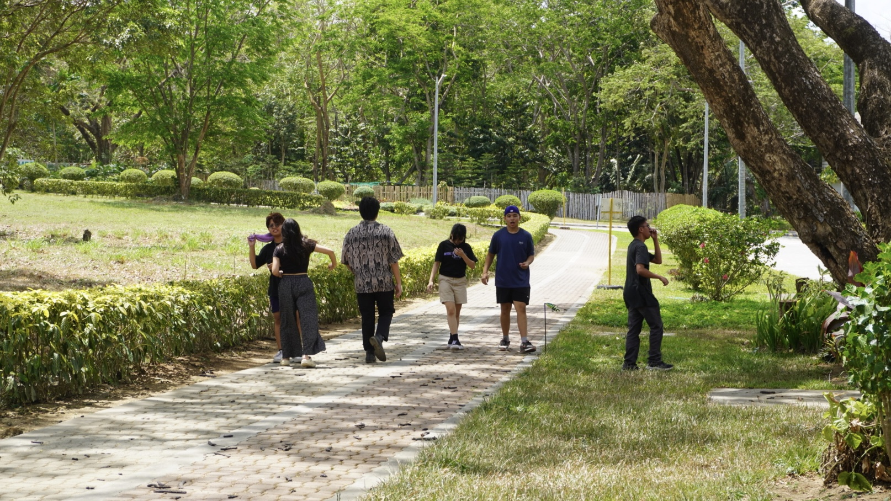

The Unfinished Tale of Efren Peñaflorida: A Beacon of Hope and Inspiration for Future Changemakers
Written by Rocco Naranjo
Revised by Sharmaine Trellier
Revised by Sharmaine Trellier
The echoes of Efren Peñaflorida's remarkable journey reverberate far beyond the slums of Cavite City, invoking inspiration and resilience. His extraordinary saga, which began amidst poverty and hardship, transformed by an iron will and a heart full of dreams, continues to unfold. A decade ago, in 2012, Peñaflorida's unwavering ambition led him to rescue over 1,200 children from the streets, reintegrating them into the education system within a month. His only allies in this mission were a simple pushcart and an indomitable spirit that refused to bow down.
Born and raised in the harsh environment of Cavite City's slums, Peñaflorida experienced firsthand the grim realities of poverty—child labor, child prostitution, and street gangs. He was a victim of neighborhood bullying and witnessed the places where children of poverty ended up. Yet, amidst the hopelessness and even bleakest circumstances, he saw an avenue for change. He envisioned a world where the right to education was not a privilege but a norm, even for the victims of poverty. Armed with an unwavering sense of compassion and a solid educational foundation, he set out to turn this vision into reality. Despite facing ridicule and threats, he established the globally recognized Kariton Klasrum.
A critical aspect that shines through Peñaflorida's journey is his profound empathy. His intimate understanding of the struggles faced by impoverished children, borne out of his own experiences, fueled his determination to alleviate their suffering and provide opportunities for a brighter future. His empathetic approach enabled him to connect with marginalized communities intensely, earning their trust and laying the groundwork for significant change. Peñaflorida's story teaches us that empathy, understanding, and sharing the feelings of others, particularly those enduring hardships, can be a powerful catalyst for action.
Peñaflorida's life is also a reflection of selfless service, a testament to his unwavering commitment to improving the lives of others. Despite the daunting obstacles and entrenched societal norms he faced, his dedication to serving his community never wavered. Through establishing Kariton Klasrum, he highlighted the transformative potential of service-oriented initiatives, demonstrating that even small acts of kindness can trigger meaningful change. By prioritizing the needs of others above his own, Peñaflorida embodied the true essence of service, showing its power to effect positive societal transformation. His story underscores the value of service and its impact on our communities.
At the core of Peñaflorida's narrative is a deep-rooted belief in the power of individuals to effect change, regardless of their circumstances. This belief that one person can make a significant difference was a guiding principle that sustained him throughout his journey. Despite skepticism and adversity, he remained committed to his dream of a more equitable society. Peñaflorida shattered the illusion of powerlessness, inspiring countless others to recognize their potential for impact. His journey teaches us that each individual possesses the power to effect change; it's a matter of realizing this potential and taking action.
Peñaflorida's life is also a reflection of selfless service, a testament to his unwavering commitment to improving the lives of others. Despite the daunting obstacles and entrenched societal norms he faced, his dedication to serving his community never wavered. Through establishing Kariton Klasrum, he highlighted the transformative potential of service-oriented initiatives, demonstrating that even small acts of kindness can trigger meaningful change. By prioritizing the needs of others above his own, Peñaflorida embodied the true essence of service, showing its power to effect positive societal transformation. His story underscores the value of service and its impact on our communities.
By 2017, Peñaflorida's efforts had borne significant fruit. Recognized as the CNN 2009 Hero of The Year, he had provided education to over 40,000 children globally. The impact of his work was undeniable, with a marked decrease in street gang activity and war reports. The Dynamic Teen Company, helmed by Peñaflorida, collaborated with the Department of Education and other organizations. It led to 83 replications of the pushcart classrooms across the Philippines and more in Indonesia and Kenya.
Indeed, Peñaflorida's journey is a testament to hope, the transformative power of education, and a source of inspiration for future changemakers. His story is a powerful reminder that heroes come in all forms, and often, their journey begins with a simple act of courage and a dream. His journey is a testament to our potential to be an agent of change, rise above our circumstances, and make a meaningful difference in our world. From being a young boy in the slums of Cavite City to becoming an internationally recognized figure, his life story serves as a beacon of hope for the deprived and underprivileged, showing that no matter where you come from, you have the potential to make a difference. As Peñaflorida says, “One is never too ordinary to be a hero.”

The prize money he received from the CNN award was instrumental in constructing their educational facilities, including the Kariton High School. Today, Peñaflorida serves as a math instructor at the school, and in 2018, he proudly witnessed the graduation of the school's first batch. Yet, Peñaflorida's journey is far from over. His unwavering dedication ensures that as long as children are deprived of education, the wheels of the Kariton Klasrum carts will keep turning. Indeed, Peñaflorida's journey is a testament to hope, the transformative power of education, and a source of inspiration for future changemakers. His story is a powerful reminder that heroes come in all forms, and often, their journey begins with a simple act of courage and a dream. His journey is a testament to our potential to be an agent of change, rise above our circumstances, and make a meaningful difference in our world. From being a young boy in the slums of Cavite City to becoming an internationally recognized figure, his life story serves as a beacon of hope for the deprived and underprivileged, showing that no matter where you come from, you have the potential to make a difference. As Peñaflorida says, “One is never too ordinary to be a hero.”